Overview
Give a high-level overview of what you implemented in this project. Think about what you've built as a whole. Share your thoughts on what interesting things you've learned from completing the project.
This project was on the rasterization of images and texture mapping. During sampling in order to tackle aliasing problems we used antialiasing methods, namely supersampling. We briefly went over transformations of 2D objects on a 2D plane via translation, scaling and rotation. For texture mapping, we used (u,v) coordinates within our texture space weighted by our barycentric coordinates in order to map from our texture space onto on screen space via nearest, bilinear, and trilinear sampling methods.
Section I: Rasterization
Part 1: Rasterizing single-color triangles
Walk through how you rasterize triangles in your own words. Explain how your algorithm is no worse than one that checks each sample within the bounding box of the triangle.
In order to rasterize a triangle (within this project) we were given 3 points associated to some triangle within the overall image. We then isolated and incremented within only the points created by the box of the triangle (smallest x, smallest y, largest x, largest y). We then performed the point-in-triangle test where we test whether or not any associated point within the triangle was on the same portion of the lines which formed the triangle. If so, the point was in the triangle and we would then color the cordinate via the designated color passed into the method. My algorithm for this project guaruntees that we check no more than the surrounding box of the triangle by isolating the smallest x, smallest y, largest x, and largest y in order to create the smallest box which encapsulates the triangle and increment through for the rasterization process.
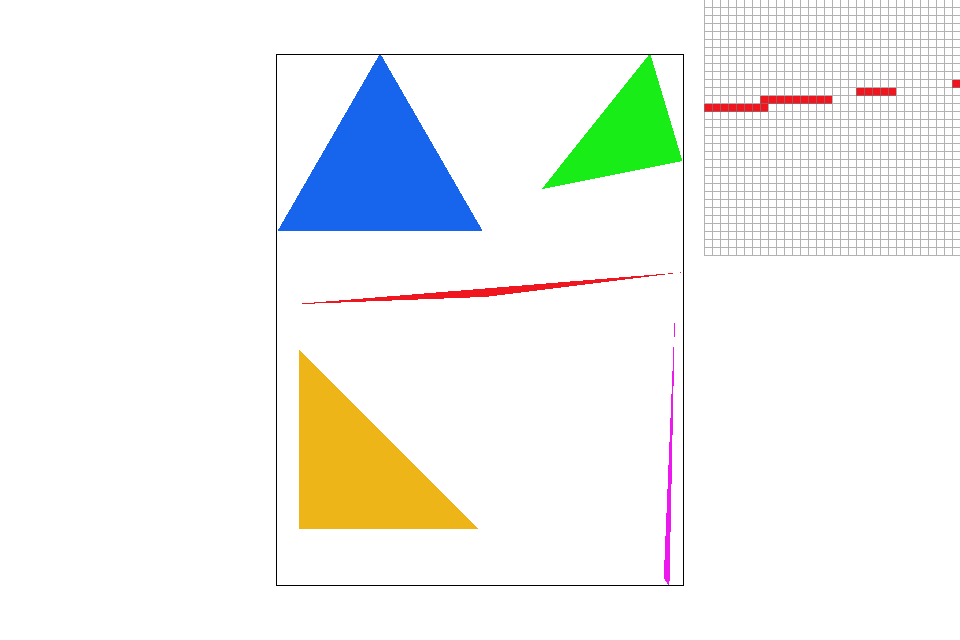Part 2: Antialiasing triangles
Walk through how you implemented supersampling and what modifications you made to the rasterization pipeline in the process. Explain how you used supersampling to antialias your triangles.
Supersampling is an idea in which each pixel theoretically represented as a square in this case, is split up further into an NxN grid and each center of the subpixels is tested via the point-in-triangle test. If the subpixel is within the triangle then we color it accordingly. We implemented supersampling, by subdividing every pixel within the box bound into NxN subpixels. We then perform the point-in-triangle test and with fill_color which allows us color the subpixel accordingly. The color of the subpixel is created by averaging the overall colors of all subpixels within the corresponding pixel. After coloring, it creates a more defined look and gets rid of a majority of jaggies when increased into a high level of subdivisions. The reason supersampling helps to eliminate aliasing is because we filter out high frequency signals (i.e. edges) by further bluring them out and blending them into the overall surrounding pixels.
|
|
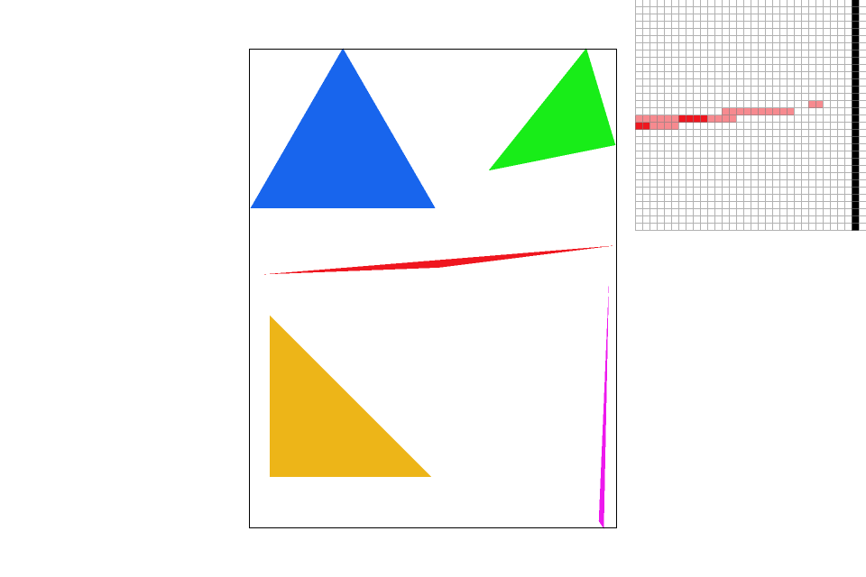
|
|
|

|
Part 3: Transforms
I adjusted the robot to be blue (GO BEARS!!!) and rotated his outer limbs to look like hes jumping. Everyone has that picture with some group where they try to all jump in the air and capture that moment. This is suppose to represent that.
|
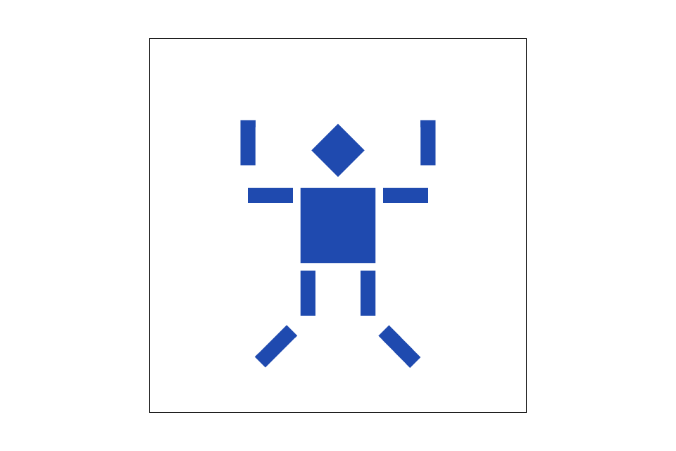
|
Section II: Sampling
Part 4: Barycentric coordinates
Explain barycentric coordinates in your own words and use an image to aid you in your explanation. One idea is to use a svg file that plots a single triangle with one red, one green, and one blue vertex, which should produce a smoothly blended color triangle.
Barycentric coordinates, in our case, are points within a triangle in which barycentric coordinates can be calculate to form values for alpha, beta, and gamma. Alhpa, beta, and gamma add up to one and represent the proportion of the area of a region of the triangle representative of the points forming it. For instance the triangle below shows how as we approach certain areas we have mixed shades of the colors belonging to the relative corners of the triangle. The closer to certain regions/points we are the more of the color is representative proportionally. As green approaches red, we see an orange, to yellow, to green shade and the same for the other side accordingly, blue to different shades of purple to red.
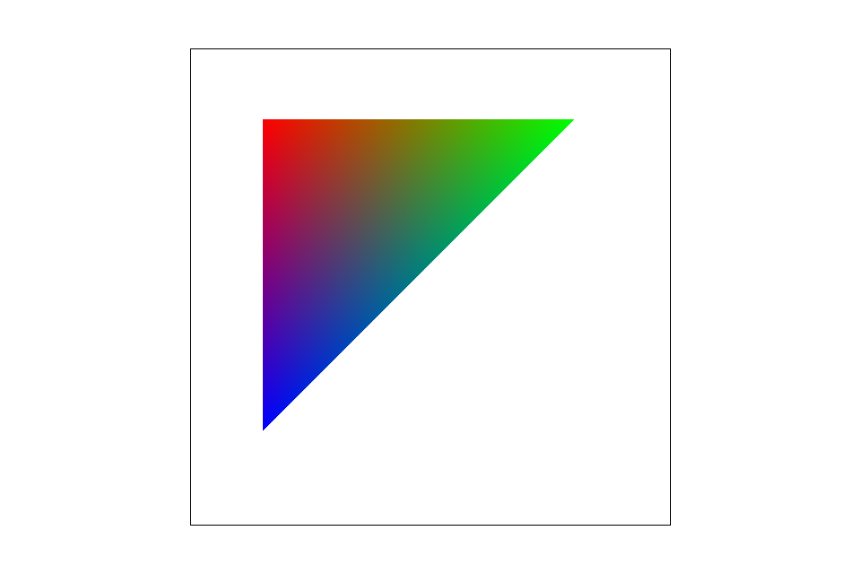Part 5: "Pixel sampling" for texture mapping
Explain pixel sampling in your own words and describe how you implemented it to perform texture mapping. Briefly discuss the two different pixel sampling methods, nearest and bilinear.
We implemented pixel sampling for texture mapping at mipmaps[level=0] which is the highest resolution texture. In this problem we used two methods for pixel sampling: nearest and bilinear.
For nearest pixel sampling, we take the uv coordinates from the texture space and weight them using our calculated barycentric coordinates. From there we access mipmaps at the appropriate level (in this case 0) and index ( found via linear interpolation of appropriate ui and vi) in order to acquire the accurate texel and color for the current pixel. The texel for nearest sampling is taken by finding the nearest one which in this cased we found by flooring the u and v coordinates.
For bilinear pixel sampling the process changes from above in selecting the texels for the current pixel. Instead of choosing the texel by simply flooring, logic is put in place to determine the relative location of the uv coordinate within a pixel. In retrospect, we divide a pixel "square" into 4 quadrants. Depending on the quadrant the uv coordinate exists in that pixel and corresponding texel is either the top left, top right, bottom left, or bottom right. We then take action in determining the appropriate counter parts to the texel after finding its relative location. After selecting the four texels we then must perform three linear interpolations getting two distinguished colors and then a final color by interpolating the previous two colors. Esentially averaging out the four texel colors via horizontal(top two, bottom two) and vertical interpolation (previous two created into one). The average is then returned to be used as the color for the original pixel.
When triangles within an image represent a space that has depth or is "farther away" there will be a larger difference. The frequency of a far area is typically higher and more difficult to texture because their (u, v) coordinates are farther apart than their corresponding (x, y) coordinates thus the distance would be translated to the texture map. Nearest pixel sampling performs worse than bilinear pixel sampling only slightly because bilinear sampling takes an average of the four pixel texels thus creating a somewhat smoother image. In this example below, there is no large (other than some finer definition) noticeable difference between taking an average of the four surrounding texels and the nearest texel as seen below on the four images since the relative depth or objects within the image resonate at the same level.
|
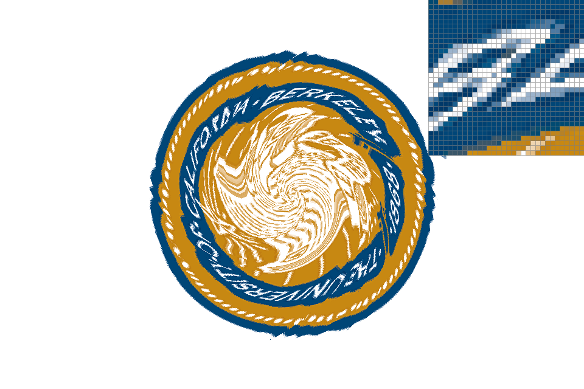
|
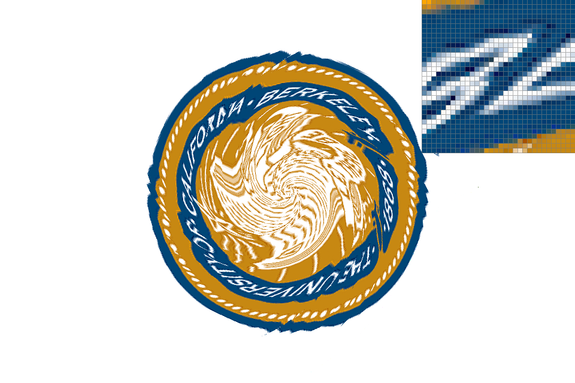
|
|
|
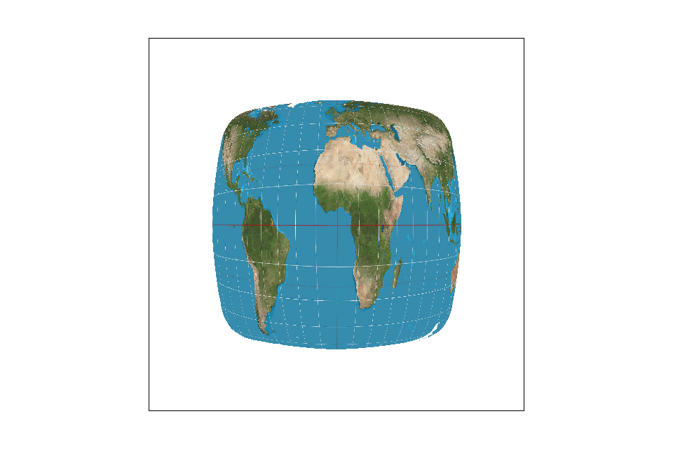
|
|
|
|
Part 6: "Level sampling" with mipmaps for texture mapping
Explain level sampling in your own words and describe how you implemented it for texture mapping.
In this problem we tackled allowing texture sampling to sample via different levels to combat the different frequency of objects within an image (objects farther away have a higher frequency, objects closer have a lower and if we sampled from a continuous frequency we will have aliasing).
We had to adjust DrawRend::rasterize_triangle to compute the barycentric coordinates of the (x + 1, y) and (x, y + 1) pixels. We then updated TexTri::color to compute dx_uv and dy_uv vectors as we previously did for Problem 4 for regular uv coordinates. This involved linear interpolation and weighting accordingly as previously mentioned. These coordinates represent how far in the texture space, we have to move, in order to get to the next texel for adjacent pixels in the screen space. We then computed L within Texture::get_level(). L is the relative distance travelled within the texture space in order to reach the next accurate texel. We then computed D (log2f of L), which is the level of the mipmap we should use for the corresponding pixel based on its overall frequency.
After getting the relatively correct level we perform trilinear sampling. Trilinear sampling is a linear interpolation of either nearest sampling or bilinear sampling in where we calculate te appropriate colors for the designated pixel by performing either sampling method using the Floor(D) and the Floor(D) + 1. This averages out the color from the two relative closests levels. We then assign that color to the designated pixel.
For images with stable frequencies throughout pixel sampling at level 0 seems adequate. Level Sampling should definitely be used for images with varying frequencies (most images probably). In general it seems supersampling is relatively costly (althought GPU's parallelize this so idk how costly?). In general, form this project atleast it seems supersampling is the best at tackling aliasing. I am sure there are better ways (?). Overall, I throughly enjoyed the first project.
|
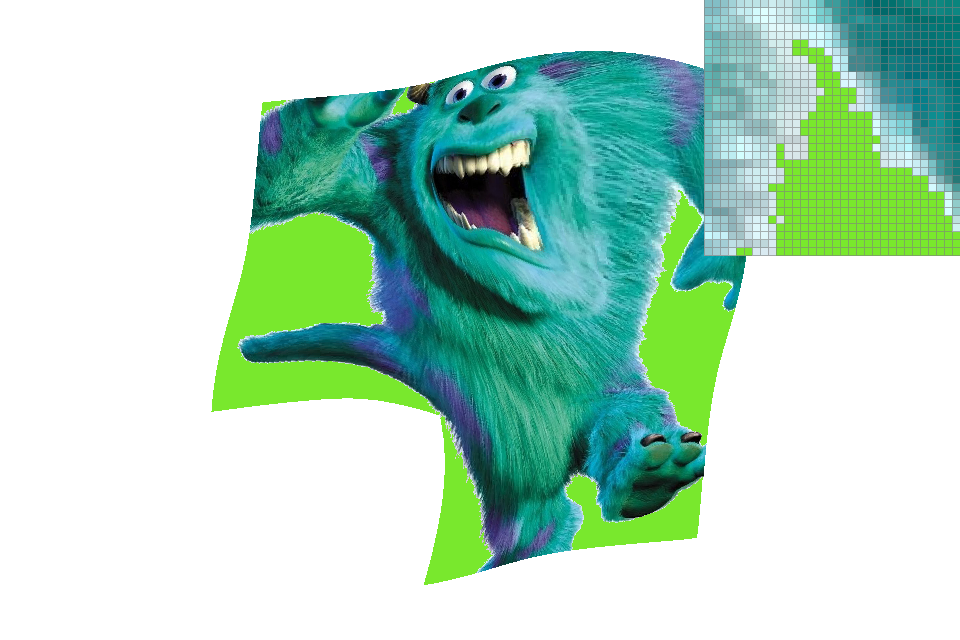
|
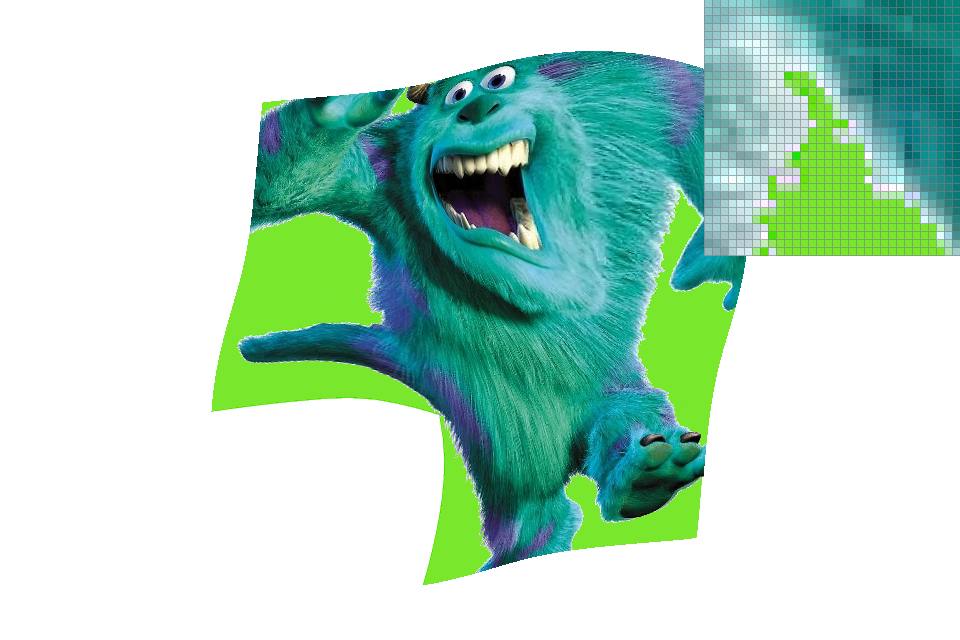
|
|
|
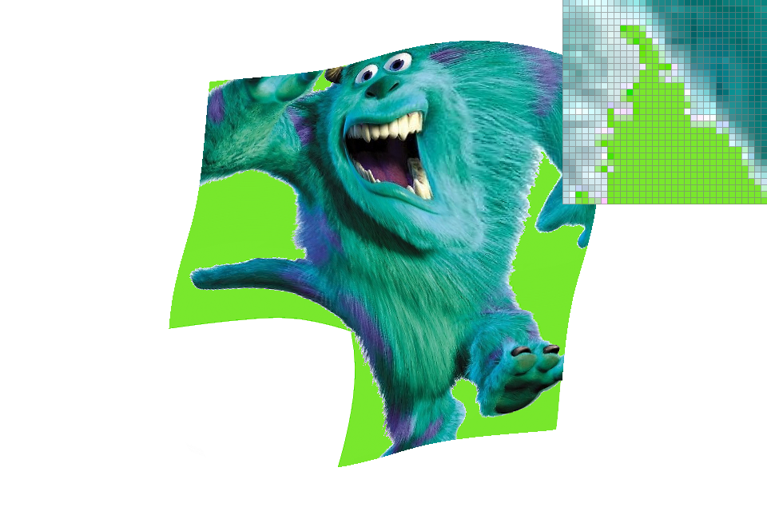
|
Section III: Art Competition
If you are not participating in the optional art competition, don't worry about this section!
Part 7: Draw something interesting!
|
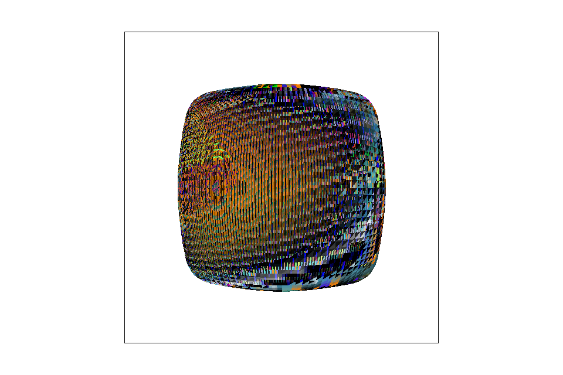
|